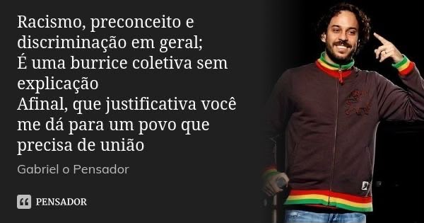
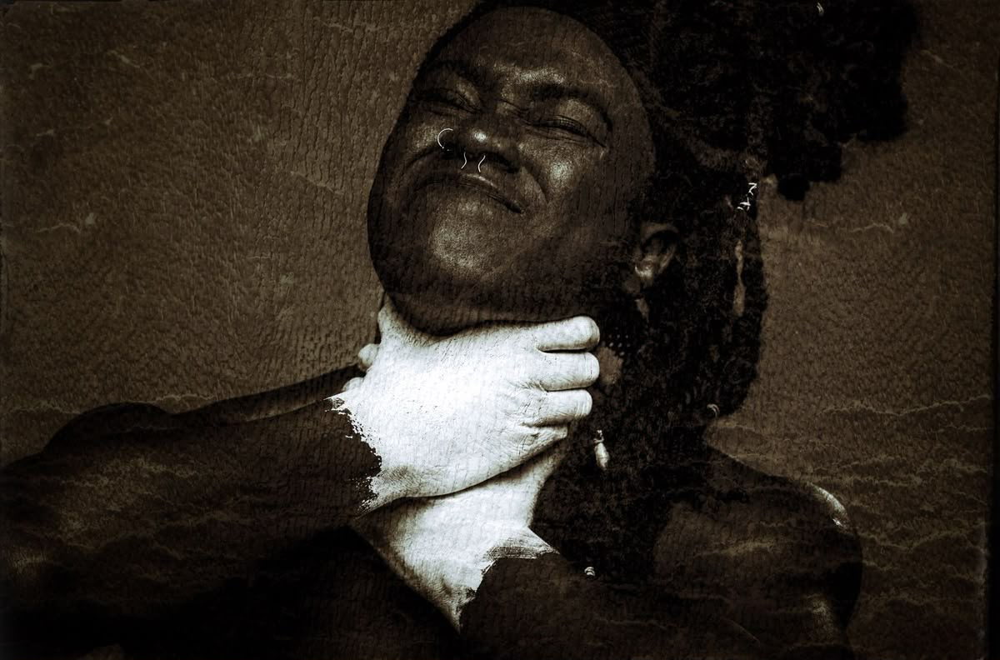
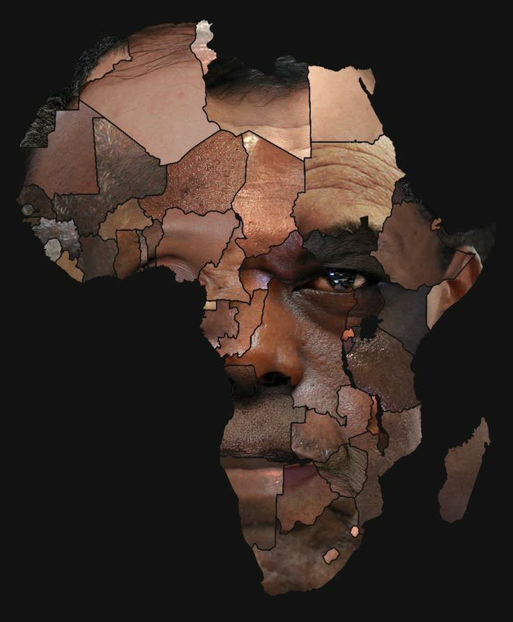
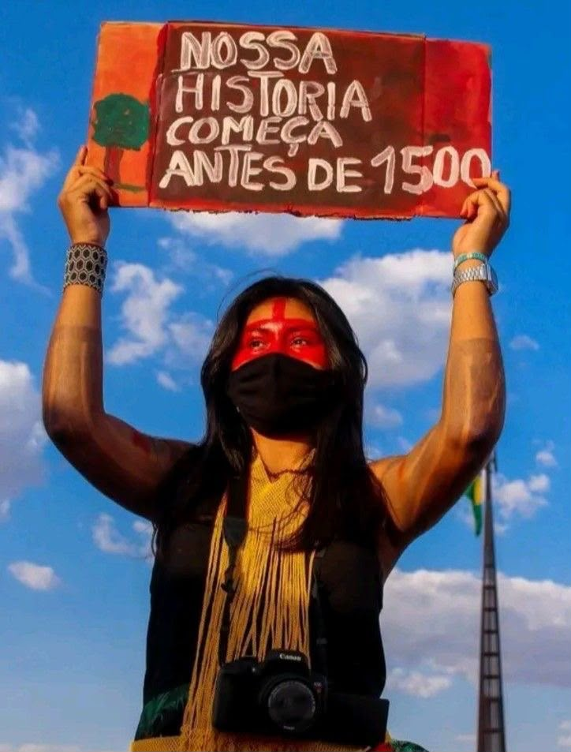
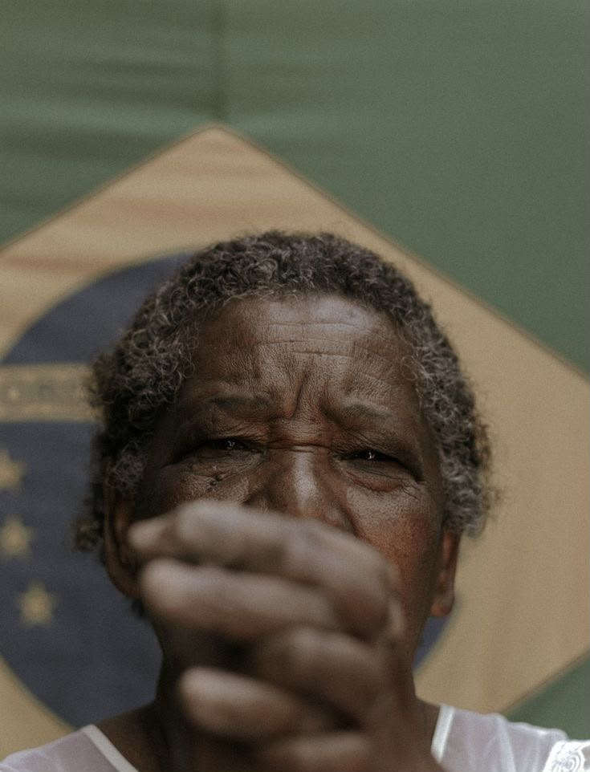
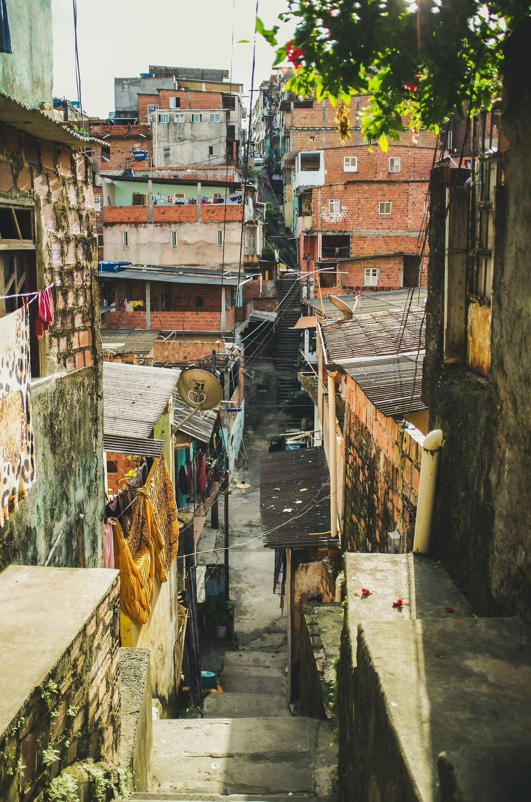

Intelectualidades
Bem-vindo ao nosso blog escolar! Aqui compartilhamos nossos projetos, ideias e aprendizados. Para iniciar nossa jornada, deixamos algumas reflexões fundamentais que guiam nosso pensamento crítico.

"Não faremos injustiça aos filósofos que se tiverem formado entre nós, mas dir-lhes-emos palavras justas, ao forçá-los a tomar conta dos outros e a guardá-los."- Platão
Platão entendia que a função do intelectual era indissociável da responsabilidade política, agindo com ética e justiça.

"Os filósofos limitaram-se a interpretar o mundo de diversas maneiras; o que importa é transformá-lo."- Karl Marx

“Lugar de fala não é silenciamento, é localização.”- Djamila Ribeiro
O intelectual engajado busca quebrar o silêncio secular imposto a negros, indígenas e mulheres, permitindo que eles sejam sujeitos da própria história.

“Cada sociedade possui seu regime de verdade.”- Foucault
Foucault entendia que o intelectual deveria analisar como as instituições fabricam regimes de verdade e moldam os sujeitos.

“Sapere aude! Tenha coragem de fazer uso do teu próprio entendimento.”- Immanuel Kant
Para Kant, sair da menoridade exige autonomia, razão e pensamento crítico.

"Nenhuma sociedade que esquece a arte de questionar pode esperar encontrar respostas para os problemas que a afligem."- Zygmunt Bauman
Mudanças Climáticas
Nesta seção estão reunidos os trabalhos desenvolvidos pelos estudantes sobre mudanças climáticas, seus impactos e os desafios ambientais contemporâneos.
Mudanças Climáticas
Insira aqui o primeiro texto do trabalho. Este espaço pode ser utilizado para apresentar o tema, contextualizar o assunto e explicar os objetivos da atividade.

Desenvolvimento do trabalho
Insira aqui o segundo texto. Este espaço pode apresentar os resultados da pesquisa, explicar a atividade realizada e registrar as conclusões dos estudantes.

Vídeos e áudios
Confira os conteúdos audiovisuais produzidos pelos estudantes.
Vídeo do trabalho
Descrição do vídeo.
Áudio do trabalho
Podcast, entrevista ou produção sonora.
Racismo
Nesta seção estão reunidos trabalhos relacionados ao racismo, às relações étnico-raciais e ao combate à discriminação.
Racismo
Insira aqui o primeiro texto do trabalho, apresentando o tema, sua contextualização e os objetivos da atividade.












Desigualdade Social
Trabalhos e produções relacionados às desigualdades sociais e econômicas presentes na sociedade.
Desigualdade Social
Insira aqui o primeiro texto do trabalho, apresentando o tema e os objetivos da atividade.

Desenvolvimento do trabalho
Apresente aqui os dados, reflexões, pesquisas e conclusões obtidas durante a atividade.

Vídeos e áudios
Vídeo
Apresentação do trabalho.
Áudio
Produção sonora.
Decolonialidade
Produções relacionadas ao pensamento decolonial, à cultura e às diferentes formas de compreender a sociedade e a história.
Decolonialidade
Insira aqui o primeiro texto, apresentando o tema e contextualizando o trabalho realizado.

Desenvolvimento do trabalho
Apresente aqui as principais discussões, pesquisas, resultados e conclusões desenvolvidas pelos estudantes.

Vídeos e áudios
Vídeo
Registro da atividade.
Áudio
Produção sonora.
Feminicídio
Feminicídio: Quando a violência deixa de ser ignorada. O feminicídio não começa no último dia. A prevenção também não.
Feminicídio
Ela achava que era ciúme. Primeiro, ele perguntou por que ela demorava para responder. Depois, quis saber onde estava, com quem estava e por que havia conversado com determinada pessoa. Vieram as perguntas sobre as roupas. Depois, as amizades que começaram a incomodá-lo. Aos poucos, ela passou a escolher o que fazer pensando em como ele reagiria. Ela dizia para si mesma que aquilo era preocupação. Mas não era. Era controle. A violência nem sempre começa com uma agressão física. Às vezes, começa com pequenas atitudes chamadas de amor, cuidado ou ciúme. O problema é que, quando o controle passa a ser confundido com carinho, a violência pode se esconder à vista de todos. Por isso, falar sobre feminicídio é também falar sobre tudo aquilo que pode acontecer antes do último dia.

Desenvolvimento do trabalho
Insira aqui o segundo texto, apresentando as pesquisas, reflexões, resultados e conclusões desenvolvidas pelo grupo.

Vídeos e áudios
Vídeo
Apresentação do trabalho.
Áudio
Produção sonora.